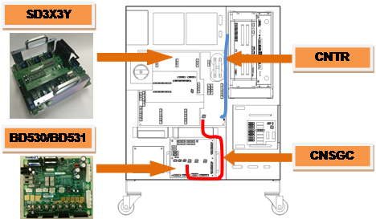
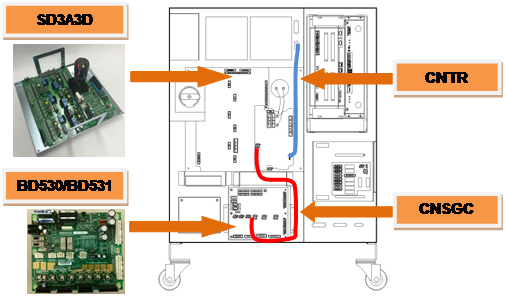
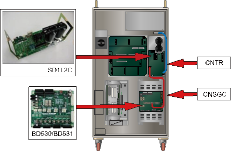
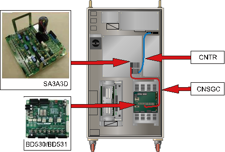
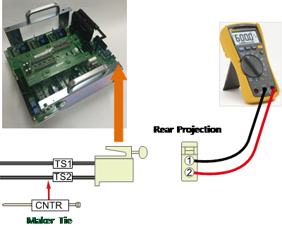
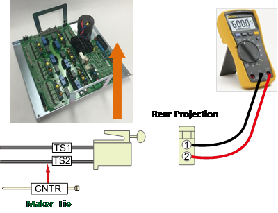
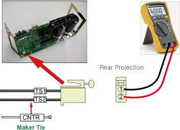
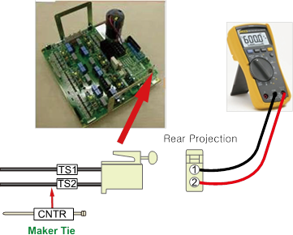

Previous error code: E0010 AMP regenerative discharge resistor overheating
1.1.52.1. Outline
Recovery electric power that generated when robot reduces a speed or moving toward to a gravity direction is discharged by resistance.
This error is related to an overheat that caused by the resistance.
It could occur due to a fault in the overheating detection sensor circuit or a problem with the cable
1.1.52.2. Causes and examine methods
|
There is an abnormality with the overheating error detection path or the resistance value has changed.
< Case: Error always occurs even when the motor is off > (1) Check the cables related to the overheating error detection. n Please examine the resistor of CNTR cable. n Please replace CNSGC cable and examine it. (2) Check the parts related to the overheating error detection. n Please replace BD530/BD531 board and examine it. n Please replace servo drive unit and examine it. |
(1)Check the cables related to the overheating error detection.
Recovery resistance overheat error is detected by Servo Drive Unit. Each end's On/Off status of overheat sensor that are attached to a recovery resistor is being monitored by CNTR connector. Detected error will be sent through CNSGC cable to be handled by software at the BD530/BD531 board.

(a) Hi5a-S00 controller

(b) Hi5a-S30 controller

(c) Hi5a-N00 controller

(d) Hi5a-N30 controller
Figure 1.161 Arranging the parts related to the regenerative resistor overheating error
n Examining the CNTR Cable
Please examine the sensor from a CNTR connector that connects the overhear detection sensors.
In a normal status, sensor must be measured less or than 0.1 ohm

(a) Hi5a-S00 controller

(b) Hi5a-S30 controller

(c) Hi5a-N00 controller

(d) Hi5a-N30 controller
Figure 1.162 Measuring the resistance value at CNTR
n Replacement and examining of CNSGC cable
Replace the CNSGC cable with new one and test it. If the error does not persist, cable connection problem caused this error. Please replace the CNSGC cable with new one.
(2) Check the parts related to the overheating error detection.
n Replacement and examining of BD530/BD531
Replace the BD530/BD531 with new one and test it. If the error does not persist, the board malfunction caused this error. Please replace the BD530/BD531 with new one.
n Replacement and inspection of servo drive unit
The regenerative resistor overheating error detection module is as shown below.
Ø Hi5a-S controller : Medium size SD3X3Y, Small size SD3A3D
Ø Hi5a-N controller : Medium size SD1L2C, Small size SA3A3D
Please check the components in the controller that you are currently using and examine it. Please replace it with new one and see if the error persists.